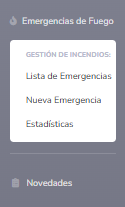
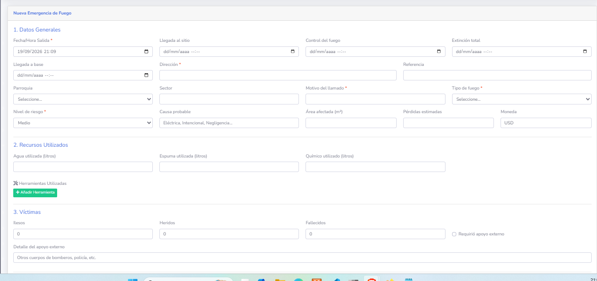
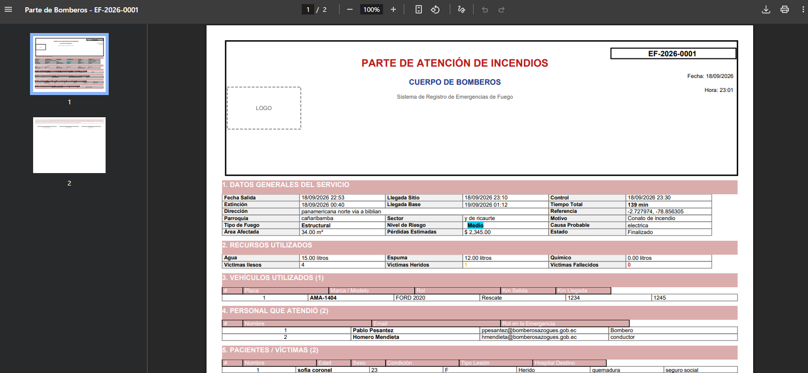
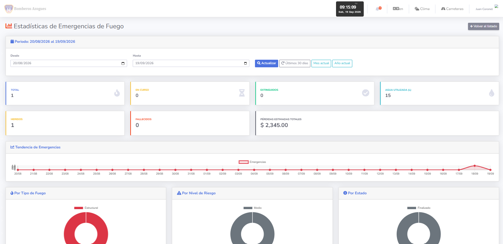

🚑
MANUAL DE USUARIO
Módulo de Emergencias Prehospitalarias
Sistema de Gestión de Bomberos
BOM Azogues
Versión 1.0 — Septiembre 2026
📋 Índice de Contenidos
- ¿Qué es el módulo de Emergencias Prehospitalarias?
- ¿Cómo acceder al módulo?
- Registrar una nueva emergencia
- Añadir pacientes
- Añadir personal que atiende
- Añadir insumos utilizados
- Guardar la emergencia
- Ver el listado de emergencias
- Ver el detalle de una emergencia
- Editar una emergencia
- Adjuntar archivos
- Generar el PDF del parte de ambulancia
- Eliminar una emergencia
- Ver estadísticas
- Preguntas frecuentes
1. ¿Qué es el módulo de Emergencias Prehospitalarias?
Este módulo permite registrar las atenciones de ambulancias que realiza el cuerpo de bomberos. Cada emergencia puede incluir:
- Datos generales: fecha, hora, dirección, motivo
- Pacientes atendidos: nombre, edad, sexo, signos vitales
- Personal que atendió: bomberos, paramédicos, conductores
- Vehículo/ambulancia utilizada
- Insumos médicos usados (con descuento automático de stock)
- Archivos adjuntos: fotos, documentos del incidente
2. ¿Cómo acceder al módulo?
- Inicia sesión en el sistema con tu usuario y contraseña
- En el menú lateral izquierdo, busca "Emergencias Prehospitalarias" 🚑
- Haz clic para desplegar el submenú
- Verás 3 opciones: Lista, Nueva y Estadísticas

Figura 1: Ubicación del módulo en el menú lateral
3. Registrar una nueva emergencia
Paso 1: Acceder al formulario
En el menú, haz clic en "Emergencias Prehospitalarias" → "Nueva Emergencia".

Figura 2: Formulario de nueva emergencia
Paso 2: Completar Datos Generales
| Campo |
Descripción |
¿Obligatorio? |
| Fecha/Hora Salida | Cuándo salió la ambulancia | ✅ Sí |
| Llegada al sitio | Cuándo llegó al lugar | No |
| Salida del sitio | Cuándo salió del lugar | No |
| Llegada a base | Cuándo regresó | No |
| Dirección | Dirección exacta | ✅ Sí |
| Referencia | Punto de referencia | No |
| Prioridad | Color del triage | ✅ Sí |
| Motivo del llamado | Por qué se llamó | ✅ Sí |
| Tipo de Emergencia | Accidente, Trauma, etc. | ✅ Sí |
| Vehículo | Qué ambulancia se usó | ✅ Sí |
Prioridad del triage:
Rojo Crítico, riesgo de muerte
Naranja Grave
Amarillo Urgencia moderada
Verde Menos urgente
Azul No urgente
4. Añadir pacientes
Cada emergencia puede tener varios pacientes.
- En la sección "3. Pacientes Atendidos", haz clic en "+ Añadir Paciente"
- Se agregará una tarjeta con el formulario del paciente
- Completa los datos (ver abajo)
- Repite para añadir más pacientes

Figura 3: Tarjeta de paciente con signos vitales
Datos básicos
- Nombre completo (obligatorio)
- Edad (obligatorio)
- Sexo: Masculino, Femenino, Indefinido
- Cédula (opcional)
- Teléfono (opcional)
Signos vitales prehospitalarios
- FC: Frecuencia cardíaca (lpm)
- FR: Frecuencia respiratoria (rpm)
- SatO₂: Saturación de oxígeno (%)
- Temp: Temperatura (°C)
- TA Sistólica / Diastólica: Presión arterial (mmHg)
- Glasgow: Escala de conciencia (3-15)
Evaluación
- Motivo de atención
- Evaluación
- Procedimientos realizados
- Observaciones
Condición y destino
- Condición: Estable, Crítico, Fallecido, Rechaza atención
- Destino: Trasladado, Alta en sitio, Fuga, etc.
- Hospital destino
Para eliminar un paciente, haz clic en el botón rojo "Eliminar" de su tarjeta.
5. Añadir personal que atiende
- En la sección "2. Personal que Atiende", haz clic en "+ Añadir Personal"
- Selecciona el Funcionario de la lista
- Escribe su Rol (Conductor, Paramédico, Médico...)
6. Añadir insumos utilizados
- En la sección "4. Insumos Utilizados", haz clic en "+ Añadir Insumo"
- Selecciona el Insumo de la lista
- Escribe la Cantidad usada
- Agrega Observaciones (opcional)
Al guardar, el sistema descuenta automáticamente el stock del insumo. Si eliminas la emergencia, el stock se restaura.
7. Guardar la emergencia
- Al final del formulario, haz clic en "Guardar Emergencia"
- El sistema validará los datos
- Si todo está bien, te redirigirá al detalle
Verás un mensaje verde: "Emergencia prehospitalaria registrada correctamente"
8. Ver el listado de emergencias
En el menú, haz clic en "Emergencias Prehospitalarias" → "Lista de Emergencias".

Figura 4: Listado con filtros y paginación
Filtros disponibles
- Buscar: Por código, dirección o motivo
- Estado: En curso, Finalizada, Cancelada, Derivada
- Prioridad: Rojo, Naranja, Amarillo, Verde, Azul
- Tipo: Accidente, Trauma, etc.
- Vehículo y Personal
- Rango de fechas
- Registros por página: 10, 25, 50 o 100
9. Ver el detalle de una emergencia
Desde el listado, haz clic en el código o en el botón 👁️ Ver.

Figura 5: Detalle completo de la emergencia
Secciones del detalle
- Datos Generales
- Personal que Atendió
- Pacientes Atendidos (con signos vitales)
- Insumos Utilizados
- Archivos Adjuntos
- Información de Registro
10. Editar una emergencia
- Desde el detalle, haz clic en "Editar"
- Modifica los campos que necesites
- Puedes añadir o eliminar pacientes, personal e insumos
- Haz clic en "Actualizar Emergencia"
Al guardar, el sistema restaura el stock de insumos anteriores y descuenta el de los nuevos.
11. Adjuntar archivos
Subir archivos
- Ve al detalle de una emergencia
- Busca la sección "Archivos Adjuntos"
- Haz clic en "Subir Archivos"
- Selecciona los archivos (puedes seleccionar varios)
- Haz clic en "Subir"

Figura 6: Sección de archivos adjuntos con barra de progreso
Tipos permitidos
📷 Imágenes · 📄 PDF · 📝 Word · 📊 Excel · 🎥 Video · 🎵 Audio · 📦 ZIP/RAR
Límites
- Máximo 10 MB por archivo
- Máximo 50 MB por emergencia
La barra de progreso te muestra cuánto espacio llevas usado:
🟢 Verde: menos del 70%
🟡 Amarillo: 70% - 90%
🔴 Rojo: más del 90%
12. Generar el PDF del parte de ambulancia
- Ve al detalle de una emergencia
- Haz clic en "Generar PDF"
- Se abrirá el PDF en una nueva pestaña

Figura 7: PDF del parte de ambulancia
Contenido del PDF
- Encabezado con logo y código
- Datos Generales del servicio
- Tiempos (respuesta, en sitio, traslado, total)
- Personal que Atendió
- Pacientes Atendidos con signos vitales
- Insumos Utilizados
- Observaciones Generales
- Firmas (3 bloques)
Para imprimir, usa Ctrl + P. Para guardar, clic derecho → "Guardar como".
13. Eliminar una emergencia
- Desde el detalle o el listado, haz clic en "Eliminar"
- Confirma la acción en el mensaje que aparece
Cuidado: Esta acción no se puede deshacer. El stock de insumos se restaurará automáticamente.
14. Ver estadísticas
- En el menú, haz clic en "Emergencias Prehospitalarias" → "Estadísticas"
- Ajusta el rango de fechas si lo necesitas

Figura 8: Panel de estadísticas con gráficos
Qué verás
- Tarjetas resumen: Total, En curso, Finalizadas, del día
- Tendencia: Línea de emergencias por día
- Por Tipo, Prioridad, Estado: Gráficos de dona
- Por Sexo y Condición de pacientes: Gráficos de barras
- Promedios de Signos Vitales
- Top 5: Vehículos, Personal, Insumos
15. Preguntas frecuentes
❓ ¿Qué pasa si me equivoco en un dato?
Puedes editar la emergencia en cualquier momento. Haz clic en "Editar" y corrige.
❓ ¿Puedo subir más de 50 MB de archivos?
No, hay un límite de 50 MB por emergencia. Si necesitas más, elimina archivos que ya no uses.
❓ ¿Por qué no puedo subir un archivo?
Verifica que: no exceda 10 MB, sea un tipo permitido y no hayas superado los 50 MB.
❓ ¿Qué pasa con el stock de insumos al eliminar una emergencia?
Se restaura automáticamente al valor que tenía antes.
❓ ¿Puedo adjuntar archivos desde el celular?
Sí, siempre que accedas al sistema desde el navegador del celular.
❓ ¿Los PDFs se guardan en el sistema?
No, el PDF se genera en el momento cada vez que lo solicitas.
❓ ¿Quién puede ver las emergencias?
Solo usuarios con permisos de operador, supervisor, admin o Super-Admin.